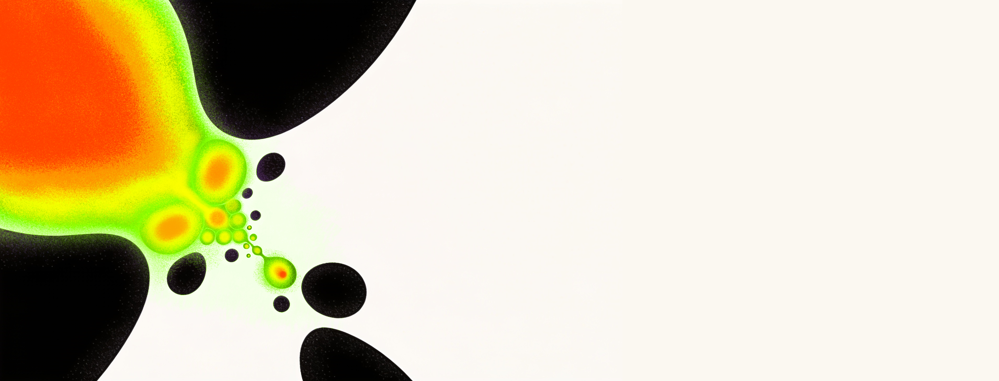

Se abordarán métodos de inferencia de redes a partir de datos de expresión génica, así como su modelación dinámica mediante redes booleanas y ecuaciones diferenciales.
Los participantes trabajarán con datos reales de expresión genética para construir e interpretar modelos de regulación aplicados a procesos de desarrollo biológico.
El proyecto se centra en la inferencia y modelación de redes de regulación genética que subyacen a procesos de desarrollo biológico. Se enfatiza el uso de: